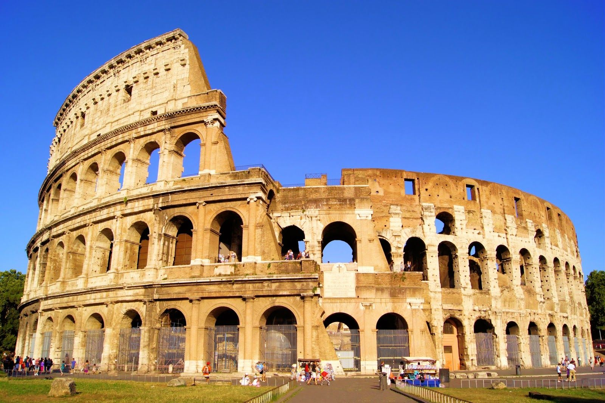

Bem vindo a EuroTour
Sobre Nós
A EuroTour ajuda voce a planejar sua viagem para Europa,desde a compra da passagem até a visitas aos pontos Turísticos importantes de cada Região!
Principais pontos Turísticos da Europa
Coliseu de Roma
O Coliseu de Roma ou Anfiteatro Flaviano é um grandioso monumento histórico e arquitetônico de formato cilíndrico que está localizado na capital da Itália: Roma.
Ponte Amsterdam

Um dos pontos turísticos mais vanguardistas da Europa, Amsterdam é o destino perfeito para quem sonha em fazer uma eurotrip Seus pontos turísticos são perfeitos para fotos inesqucíveis.
"Nos acompanhe em todas Redes Sociais e tenha os melhores guia de turismo da Europa"